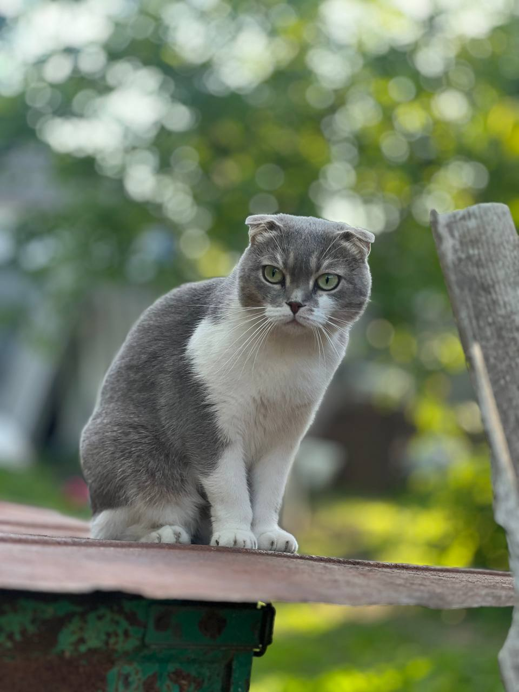
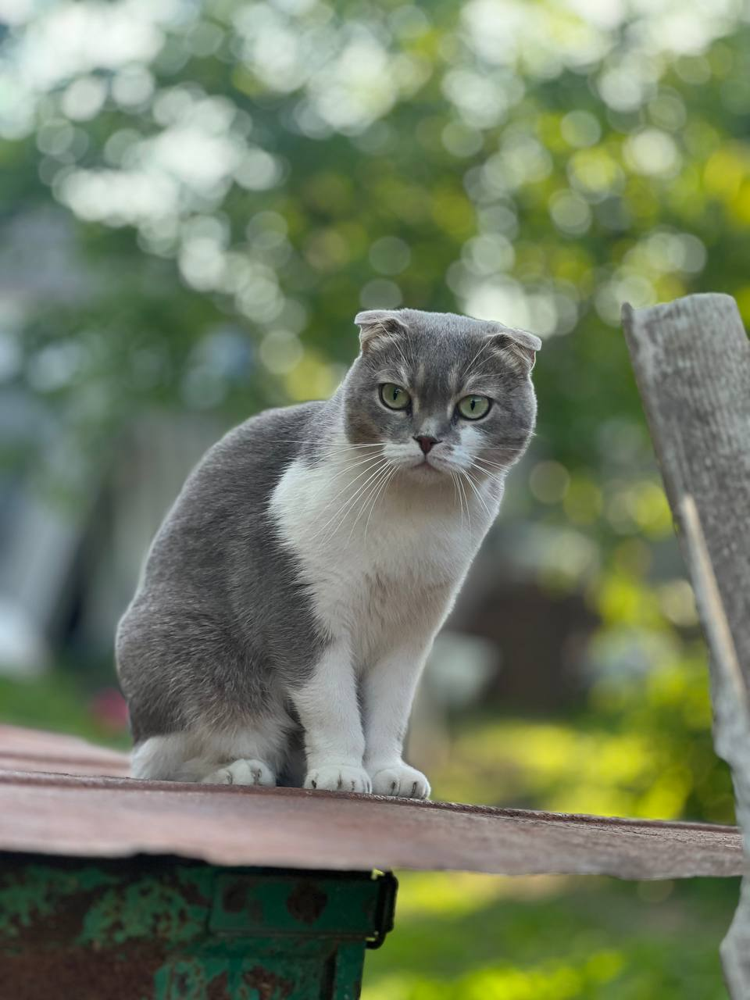

моїй кішці 6 з половиную років її звати Еля
у неї сині очі і сіро біла шерсть. Порода в неї шотландсь висловуха вона дуже сильно любить жовток з куриного яйця. 
у неї сині очі і сіро біла шерсть. Порода в неї шотландсь висловуха вона дуже сильно любить жовток з куриного яйця. 